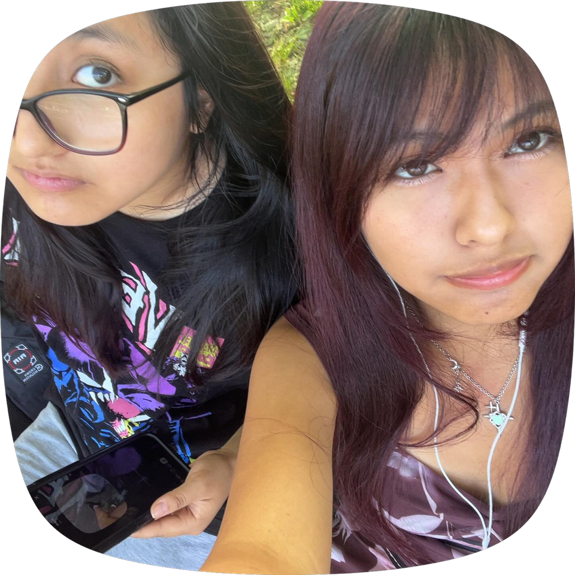

Stephany Zaraza
Student at Thomas A. Edison CTE High School
An aspiring junior in the Programming and Prototyping program, looking to delve more into the innerworkings of coding languages such as HTML/CSS, javascript, python, etc.
✧ Featured Projects ✧
A collection of projects showcasing my growth in web development, creativity, and programming skills.
Holiday Drawing
I created a festive Christmas scene using Python and SimpleGUI. I built elements like a tree, Santa, animated lights, and a holiday banner. I used loops and lists to repeat shapes and animate the lights, which made the scene more dynamic. This project helped me understand coordinates and how to build structured drawings using code.
Skills: Python, SimpleGUI, Loops, Lists, Coordinate Systems
Arcade
This project was focused on building multiple mini-games using Python. I used conditionals to control game logic and make the program respond to user input. I also added text and color to improve the visual experience. Through trial and error, I learned how to debug and structure interactive programs.
Skills: Python, Conditionals, If/Else Statements, Loops, User Input